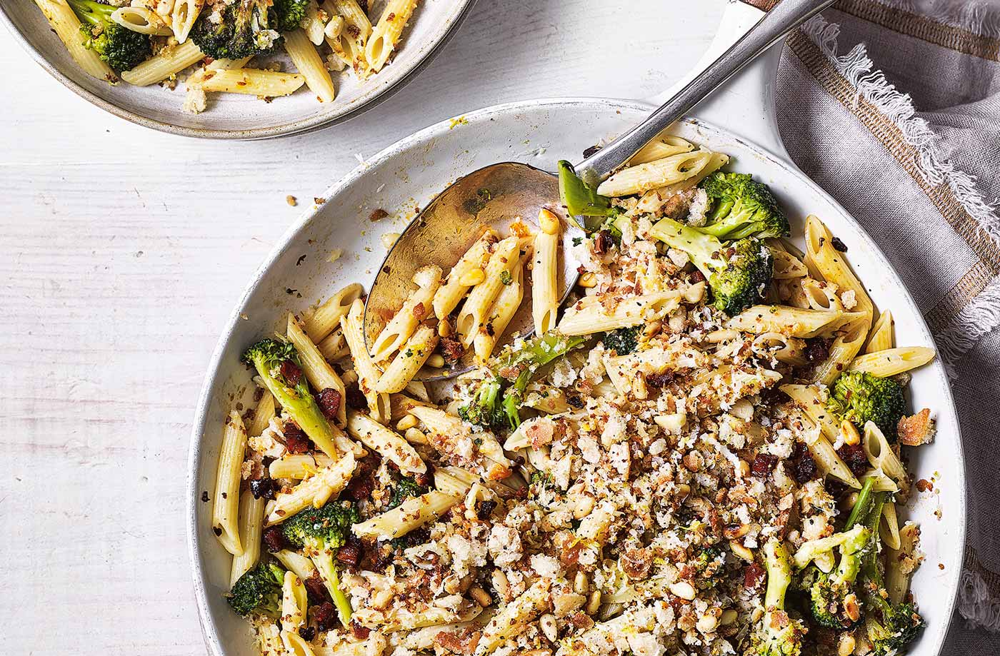

Broccoli Chorizo Penne

Quick, easy and flavoursome Italian dish
Fuse Italian pasta with spicy, Spanish paprika sausage in this midweek supper with greens and cream cheese.
Ingredients
- 400g Penne pasta
- Head of brocolli, broken into small florets
- 200g Chorizo, diced
- 2 Garlic cloves
- 1 Tablespoon of fennel seeds
- 200g Cream cheese
- Parmesan
- Rocket leaves
Steps
- Cook the penne following pack instructions, adding the broccoli for the final 3 mins. When cooked, drain, reserving a splash of the cooking water.
- Meanwhile, fry the chorizo in a large dry frying pan until it starts to turn golden and release its oils. Add the garlic and fennel seeds, and cook for 1 min more. When the penne is cooked, tip it into the pan with the chorizo. Add the cream cheese, stir together until melted, adding a splash of the reserved cooking water so the sauce coats the pasta.
- Serve in bowls, scattered with a few rocket leaves and some grated Parmesan, if you like.